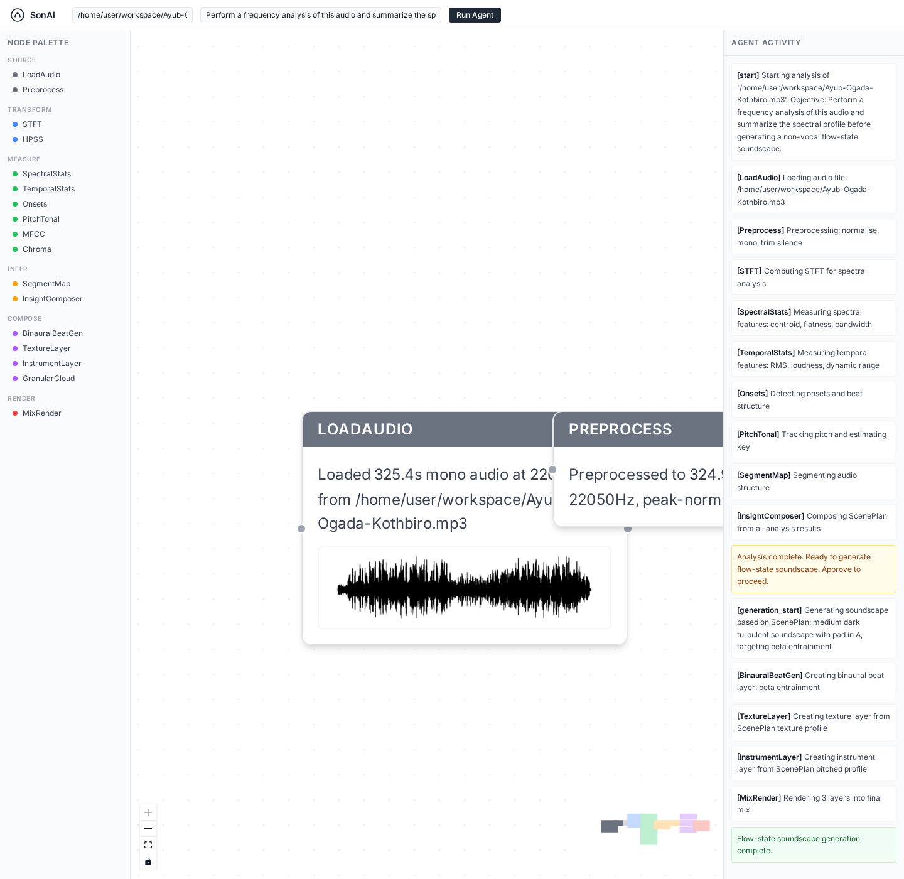

Recorded walkthrough of the SonAI graph while running frequency analysis on a reference track.
SonAI
AI-native audio intelligence
Analysis and generation in one graph.
SonAI is a natural-language node editor that turns reference audio into structured analysis, interpretable musical insight, and a non-vocal generated output. The current prototype demonstrates an end-to-end graph from audio loading to rendered result.
Demo

Final graph state after the analysis run completed in the application.
What SonAI does
Input
Upload a reference file and describe the musical objective in plain English.
Analysis
The agent places nodes for spectral, temporal, pitch, onset, and segmentation analysis.
Generation
The graph composes a non-vocal output using reusable node outputs and a render chain.
Built during
Mozart AI Hack With ElevenLabs & OpenAI
SonAI was developed in the context of Mozart AI Hack With ElevenLabs & OpenAI, a 24-hour hackathon for developers, designers, producers, and builders exploring the future of music creation.
Event details: Halkin, London · March 14–15, 2026 · organized by Mozart AI.
View event page